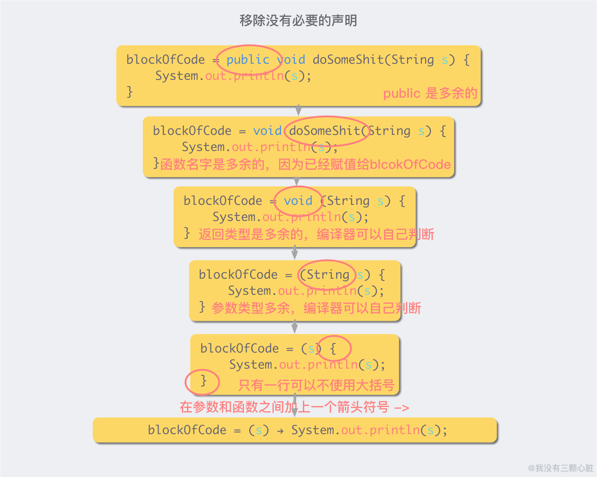
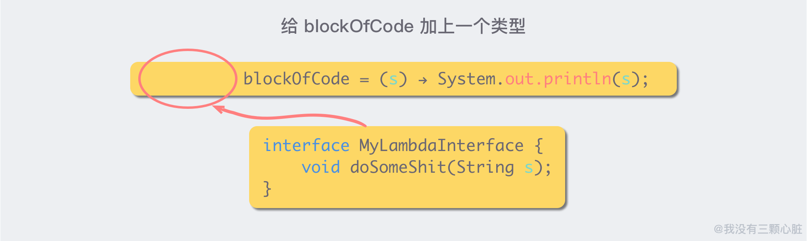
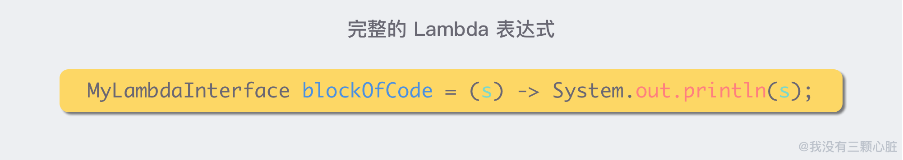
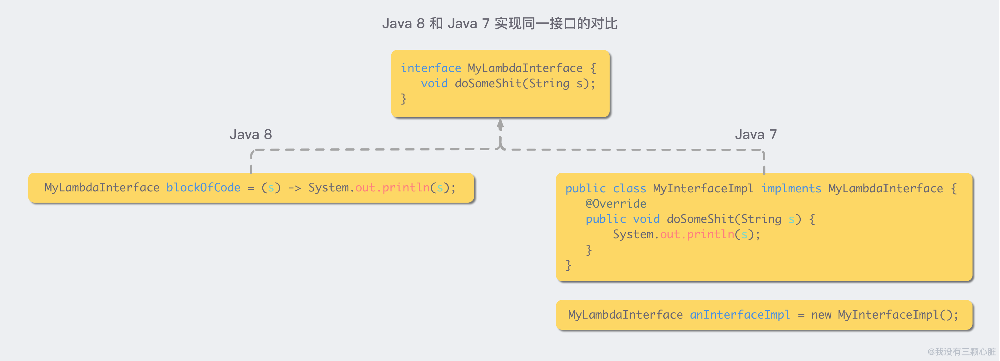

函数式编程
[TOC]
函数式编程
面向对象编程是对数据进行抽象， 而函数式编程是对行为进行抽象。
on java 函数式编程
interface Strategy {
String approach(String msg); // 函数签名，是传入一个 String，返回一个 String
}
Strategy[] strategies = {
// 分别是函数式接口(匿名类)，lambda表达式，函数引用，三者等价
new Strategy() { // [2]
public String approach(String msg) {
return msg.toUpperCase() + "!";
}
},
msg -> msg.substring(0, 5), // [3] 确实是传入一个 String，返回一个 String，没毛病
Unrelated::twice // [4]
};
函数签名：参数类型和返回值类型。签名才是一个函数的特征，叫甚么不重要！lambda 表达式甚至不起函数名了，只有输入和输出。
class Go {
static void go() {
System.out.println("Go::go()");
}
}
public class RunnableMethodReference {
public static void main(String[] args) {
// 三者等价
new Thread(new Runnable() {
public void run() { // 函数签名：没有传参，没有返回值
System.out.println("Anonymous");
}
}).start();
new Thread(
() -> System.out.println("lambda")
).start();
new Thread(Go::go).start();
}
}
java8 允许我们将函数赋值给函数式接口
@FunctionalInterface
interface Functional {
String goodbye(String arg);
}
public class FunctionalAnnotation {
public String hehe(String arg) {
return "Goodbye, " + arg;
}
public static void main(String[] args) {
FunctionalAnnotation fa =
new FunctionalAnnotation();
Functional f = fa::hehe; // 将函数赋值给函数式接口
Functional fl = a -> "Goodbye, " + a; // 将函数赋值给函数式接口
}
}
lambda 表达式
lambda 表达式就是一个函数，Java8 引入了函数式编程，意在将函数提升为第一公民，函数也可以当作变量进行赋值。

以上的过程，优雅的把「一块代码」赋给了一个变量。而「这块代码」，或者说「这个被赋给一个变量的函数」，就是一个 Lambda 表达式。
blockOfCode 的类型是什么呢？要用什么类型来接住 lambda 表达式呢？这就引出了函数式接口。Java8 规定，lambda 表达式的类型，是一个函数式接口。lambda 表达式本身是一个函数式接口的实现。


lambda 表达式本身，是对一个函数式接口的实现：

方法引用
类名或对象名::方法名
有以下四种形式的方法引用：
- 引用静态方法:
ContainingClass::staticMethodName - 引用某个对象的实例方法:
containingObject::instanceMethodName - 引用某个类型的任意对象的实例方法:
ContainingType::methodName - 引用构造方法:
ClassName::new
Demo:
public class Person {
String name;
LocalDate birthday;
public Person(String name, LocalDate birthday) {
this.name = name;
this.birthday = birthday;
}
public LocalDate getBirthday() {
return birthday;
}
public static int compareByAge(Person a, Person b) {
return a.birthday.compareTo(b.birthday);
}
@Override
public String toString() {
return this.name;
}
}
public class MethodReferenceTest {
@Test
public static void main() {
Person[] pArr = new Person[] {
new Person("003", LocalDate.of(2016,9,1)),
new Person("001", LocalDate.of(2016,2,1)),
new Person("002", LocalDate.of(2016,3,1)),
new Person("004", LocalDate.of(2016,12,1))
};
// 使用匿名类
Arrays.sort(pArr, new Comparator<Person>() {
@Override
public int compare(Person a, Person b) {
return a.getBirthday().compareTo(b.getBirthday());
}
});
//使用lambda表达式
Arrays.sort(pArr, (Person a, Person b) -> {
return a.getBirthday().compareTo(b.getBirthday());
});
//使用方法引用，引用的是类的静态方法
Arrays.sort(pArr, Person::compareByAge);
}
}
函数式接口
java.util.function 包旨在创建一组完整的函数式接口，使得我们一般情况下不需再定义自己的接口。
函数式接口其实都大同小异，接口的名字才是关键，要做到看到接口的名字，就了解这个接口的作用。
函数式接口的命名规则：
- 如果只处理对象而非基本类型，名称则为 Function， Consumer， Predicate 等。参数类型通过泛型添加。
- 如果接收的参数是基本类型，则由名称的第一部分表示，如 LongConsumer，DoubleFunction， IntPredicate 等，但返回基本类型的 Supplier 接口例外。
- 如果返回值为基本类型，则用 To 表示，如 ToLongFunction
和 IntToLongFunction。 - 如果返回值类型与参数类型一致，则是一个运算符：单个参数使用 UnaryOperator，两个参数使用 BinaryOperator。
- 如果接收两个参数且返回值为布尔值，则是一个谓词（Predicate）。
- 如果接收的两个参数类型不同，则名称中有一个 Bi。
| 函数式接口 | 方法 | 返回值类型 | 备注 |
|---|---|---|---|
| Predicate | test(T) | boolean | 断言 |
| Consumer | accept(T) | void | 只吃不吐 |
| Function<T, R> | apply(T) | R | 输入 T，输出 R |
| BinaryOperator | apply(T, T) | T | 双飞 |
| Supplier | get() | T | 只吐不吃 |
import java.util.function.*;
class In1 {}
class In2 {}
public class MethodConversion {
static void accept(In1 i1, In2 i2) {
System.out.println("accept()");
}
static void someOtherName(In1 i1, In2 i2) {
System.out.println("someOtherName()");
}
public static void main(String[] args) {
BiConsumer<In1,In2> bic;
bic = MethodConversion::accept;
bic.accept(new In1(), new In2());
bic = MethodConversion::someOtherName; // 只要函数签名一致，就可以将函数赋值给函数式接口！
// bic.someOtherName(new In1(), new In2()); // Nope
bic.accept(new In1(), new In2());
}
}
import java.util.*;
import java.util.function.*;
class AA {}
class BB {}
class CC {}
public class ClassFunctionals {
static AA f1() { return new AA(); }
static int f2(AA aa1, AA aa2) { return 1; }
static void f3(AA aa) {}
static void f4(AA aa, BB bb) {}
static CC f5(AA aa) { return new CC(); }
static CC f6(AA aa, BB bb) { return new CC(); }
static boolean f7(AA aa) { return true; }
static boolean f8(AA aa, BB bb) { return true; }
static AA f9(AA aa) { return new AA(); }
static AA f10(AA aa1, AA aa2) { return new AA(); }
public static void main(String[] args) {
Supplier<AA> s = ClassFunctionals::f1;
s.get();
Comparator<AA> c = ClassFunctionals::f2;
c.compare(new AA(), new AA());
Consumer<AA> cons = ClassFunctionals::f3;
cons.accept(new AA());
BiConsumer<AA,BB> bicons = ClassFunctionals::f4;
bicons.accept(new AA(), new BB());
Function<AA,CC> f = ClassFunctionals::f5;
CC cc = f.apply(new AA());
BiFunction<AA,BB,CC> bif = ClassFunctionals::f6;
cc = bif.apply(new AA(), new BB());
Predicate<AA> p = ClassFunctionals::f7;
boolean result = p.test(new AA());
BiPredicate<AA,BB> bip = ClassFunctionals::f8;
result = bip.test(new AA(), new BB());
UnaryOperator<AA> uo = ClassFunctionals::f9;
AA aa = uo.apply(new AA());
BinaryOperator<AA> bo = ClassFunctionals::f10;
aa = bo.apply(new AA(), new AA());
}
}
高阶函数
default <V> Function<T, V> andThen(Function<? super R, ? extends V> after) {
Objects.requireNonNull(after);
return (T t) -> after.apply(apply(t)); // 注意，这里是，after.apply(this.apply(t))
}
函数组合
函数组合（Function Composition）意为 “多个函数组合成新函数”。它通常是函数式编程的基本组成部分。
| 默认方法 | 作用 | |
|---|---|---|
| function1.andThen(function2) | 生成一个新函数，执行完 function1 再执行 function2 | |
| function1.compose(function2) | 生成一个新函数，先执行 f2，再执行 f1 | |
| function1.and(function2) | 生成一个新函数，function1(x) && function2(x) | |
| function1.or(function2) | 生成一个新函数，`function1(x) | |
| function.negate() | 生成一个新函数，!function(x) |
import java.util.function.*;
public class FunctionComposition {
static Function<String, String>
f1 = s -> {
System.out.println(s);
return s.replace('A', '_');
},
f2 = s -> s.substring(3),
f3 = s -> s.toLowerCase(),
f4 = f1.compose(f2).andThen(f3);
public static void main(String[] args) {
System.out.println(
f4.apply("GO AFTER ALL AMBULANCES"));
}
}
//AFTER ALL AMBULANCES
//_fter _ll _mbul_nces
import java.util.function.*;
import java.util.stream.*;
public class PredicateComposition {
static Predicate<String>
p1 = s -> s.contains("bar"),
p2 = s -> s.length() < 5,
p3 = s -> s.contains("foo"),
p4 = p1.negate().and(p2).or(p3);
public static void main(String[] args) {
Stream.of("bar", "foobar", "foobaz", "fongopuckey")
.filter(p4)
.forEach(System.out::println);
}
}
一篇教程
https://winterbe.com/posts/2014/07/31/java8-stream-tutorial-examples/
How streams work
A stream represents a sequence of elements and supports different kind of operations to perform computations upon those elements:
List<String> myList =
Arrays.asList("a1", "a2", "b1", "c2", "c1");
myList
.stream()
.filter(s -> s.startsWith("c"))
.map(String::toUpperCase)
.sorted()
.forEach(System.out::println);
// C1
// C2
Stream operations are either intermediate or terminal. Intermediate operations return a stream so we can chain multiple intermediate operations without using semicolons. Terminal operations are either void or return a non-stream result. In the above example filter, map and sorted are intermediate operations whereas forEach is a terminal operation. For a full list of all available stream operations see the Stream Javadoc. Such a chain of stream operations as seen in the example above is also known as operation pipeline.
Most stream operations accept some kind of lambda expression parameter, a functional interface specifying the exact behavior of the operation. Most of those operations must be both non-interfering and stateless. What does that mean?
A function is non-interfering when it does not modify the underlying data source of the stream, e.g. in the above example no lambda expression does modify myList by adding or removing elements from the collection.
A function is stateless when the execution of the operation is deterministic, e.g. in the above example no lambda expression depends on any mutable variables or states from the outer scope which might change during execution.
Different kind of streams
如何生成 Stream？
Streams can be created from various data sources, especially collections. Lists and Sets support new methods stream() and parallelStream() to either create a sequential or a parallel stream. Parallel streams are capable of operating on multiple threads and will be covered in a later section of this tutorial. We focus on sequential streams for now:
Arrays.asList("a1", "a2", "a3")
.stream()
.findFirst()
.ifPresent(System.out::println); // a1
Calling the method stream() on a list of objects returns a regular object stream. But we don't have to create collections in order to work with streams as we see in the next code sample:
Stream.of("a1", "a2", "a3")
.findFirst()
.ifPresent(System.out::println); // a1
Just use Stream.of() to create a stream from a bunch of object references.
Besides regular object streams Java 8 ships with special kinds of streams for working with the primitive data types int, long and double. As you might have guessed it's IntStream, LongStream and DoubleStream.
IntStreams can replace the regular for-loop utilizing IntStream.range():
IntStream.range(1, 4)
.forEach(System.out::println);
// 1
// 2
// 3
All those primitive streams work just like regular object streams with the following differences: Primitive streams use specialized lambda expressions, e.g. IntFunction instead of Function or IntPredicate instead of Predicate. And primitive streams support the additional terminal aggregate operations sum() and average():
Arrays.stream(new int[] {1, 2, 3})
.map(n -> 2 * n + 1)
.average()
.ifPresent(System.out::println); // 5.0
Sometimes it's useful to transform a regular object stream to a primitive stream or vice versa. For that purpose object streams support the special mapping operations mapToInt(), mapToLong() and mapToDouble:
Stream.of("a1", "a2", "a3")
.map(s -> s.substring(1))
.mapToInt(Integer::parseInt)
.max()
.ifPresent(System.out::println); // 3
Primitive streams can be transformed to object streams via mapToObj():
IntStream.range(1, 4)
.mapToObj(i -> "a" + i)
.forEach(System.out::println);
// a1
// a2
// a3
Here's a combined example: the stream of doubles is first mapped to an int stream and than mapped to an object stream of strings:
Stream.of(1.0, 2.0, 3.0)
.mapToInt(Double::intValue)
.mapToObj(i -> "a" + i)
.forEach(System.out::println);
// a1
// a2
// a3
Processing Order
Stream 为什么效率高，什么样的组合才是效率最高的？原则：先 filter 再 map！
Now that we've learned how to create and work with different kinds of streams, let's dive deeper into how stream operations are processed under the hood.
An important characteristic of intermediate operations is laziness. Look at this sample where a terminal operation is missing:
Stream.of("d2", "a2", "b1", "b3", "c")
.filter(s -> {
System.out.println("filter: " + s);
return true;
});
When executing this code snippet, nothing is printed to the console. That is because intermediate operations will only be executed when a terminal operation is present.
Let's extend the above example by the terminal operation forEach:
Stream.of("d2", "a2", "b1", "b3", "c")
.filter(s -> {
System.out.println("filter: " + s);
return true;
})
.forEach(s -> System.out.println("forEach: " + s));
Executing this code snippet results in the desired output on the console:
filter: d2
forEach: d2
filter: a2
forEach: a2
filter: b1
forEach: b1
filter: b3
forEach: b3
filter: c
forEach: c
The order of the result might be surprising. A naive approach would be to execute the operations horizontally one after another on all elements of the stream. But instead each element moves along the chain vertically. The first string "d2" passes filter then forEach, only then the second string "a2" is processed.
This behavior can reduce the actual number of operations performed on each element, as we see in the next example:
Stream.of("d2", "a2", "b1", "b3", "c")
.map(s -> {
System.out.println("map: " + s);
return s.toUpperCase();
})
.anyMatch(s -> {
System.out.println("anyMatch: " + s);
return s.startsWith("A");
});
// map: d2
// anyMatch: D2
// map: a2
// anyMatch: A2
The operation anyMatch returns true as soon as the predicate applies to the given input element. This is true for the second element passed "A2". Due to the vertical execution of the stream chain, map has only to be executed twice in this case. So instead of mapping all elements of the stream, map will be called as few as possible.
Why order matters？
The next example consists of two intermediate operations map and filter and the terminal operation forEach. Let's once again inspect how those operations are being executed:
Stream.of("d2", "a2", "b1", "b3", "c")
.map(s -> {
System.out.println("map: " + s);
return s.toUpperCase();
})
.filter(s -> {
System.out.println("filter: " + s);
return s.startsWith("A");
})
.forEach(s -> System.out.println("forEach: " + s));
// map: d2
// filter: D2
// map: a2
// filter: A2
// forEach: A2
// map: b1
// filter: B1
// map: b3
// filter: B3
// map: c
// filter: C
As you might have guessed both map and filter are called five times for every string in the underlying collection whereas forEach is only called once.
We can greatly reduce the actual number of executions if we change the order of the operations, moving filter to the beginning of the chain:
Stream.of("d2", "a2", "b1", "b3", "c")
.filter(s -> {
System.out.println("filter: " + s);
return s.startsWith("a");
})
.map(s -> {
System.out.println("map: " + s);
return s.toUpperCase();
})
.forEach(s -> System.out.println("forEach: " + s));
// filter: d2
// filter: a2
// map: a2
// forEach: A2
// filter: b1
// filter: b3
// filter: c
Now, map is only called once so the operation pipeline performs much faster for larger numbers of input elements. Keep that in mind when composing complex method chains.
Let's extend the above example by an additional operation, sorted:
Stream.of("d2", "a2", "b1", "b3", "c")
.sorted((s1, s2) -> {
System.out.printf("sort: %s; %s\n", s1, s2);
return s1.compareTo(s2);
})
.filter(s -> {
System.out.println("filter: " + s);
return s.startsWith("a");
})
.map(s -> {
System.out.println("map: " + s);
return s.toUpperCase();
})
.forEach(s -> System.out.println("forEach: " + s));
Sorting is a special kind of intermediate operation. It's a so called stateful operation since in order to sort a collection of elements you have to maintain state during ordering.
Executing this example results in the following console output:
sort: a2; d2
sort: b1; a2
sort: b1; d2
sort: b1; a2
sort: b3; b1
sort: b3; d2
sort: c; b3
sort: c; d2
filter: a2
map: a2
forEach: A2
filter: b1
filter: b3
filter: c
filter: d2
First, the sort operation is executed on the entire input collection. In other words sorted is executed horizontally. So in this case sorted is called eight times for multiple combinations on every element in the input collection.
Once again we can optimize the performance by reordering the chain:
Stream.of("d2", "a2", "b1", "b3", "c")
.filter(s -> {
System.out.println("filter: " + s);
return s.startsWith("a");
})
.sorted((s1, s2) -> {
System.out.printf("sort: %s; %s\n", s1, s2);
return s1.compareTo(s2);
})
.map(s -> {
System.out.println("map: " + s);
return s.toUpperCase();
})
.forEach(s -> System.out.println("forEach: " + s));
// filter: d2
// filter: a2
// filter: b1
// filter: b3
// filter: c
// map: a2
// forEach: A2
In this example sorted is never been called because filter reduces the input collection to just one element. So the performance is greatly increased for larger input collections.
Reusing Streams
Stream 复用。
Java 8 streams cannot be reused. As soon as you call any terminal operation the stream is closed:
Stream<String> stream =
Stream.of("d2", "a2", "b1", "b3", "c")
.filter(s -> s.startsWith("a"));
stream.anyMatch(s -> true); // ok
stream.noneMatch(s -> true); // exception
Calling noneMatch after anyMatch on the same stream results in the following exception:
java.lang.IllegalStateException: stream has already been operated upon or closed
at java.util.stream.AbstractPipeline.evaluate(AbstractPipeline.java:229)
at java.util.stream.ReferencePipeline.noneMatch(ReferencePipeline.java:459)
at com.winterbe.java8.Streams5.test7(Streams5.java:38)
at com.winterbe.java8.Streams5.main(Streams5.java:28)
To overcome this limitation we have to to create a new stream chain for every terminal operation we want to execute, e.g. we could create a stream supplier to construct a new stream with all intermediate operations already set up:
Supplier<Stream<String>> streamSupplier =
() -> Stream.of("d2", "a2", "b1", "b3", "c")
.filter(s -> s.startsWith("a"));
streamSupplier.get().anyMatch(s -> true); // ok
streamSupplier.get().noneMatch(s -> true); // ok
Each call to get() constructs a new stream on which we are save to call the desired terminal operation.